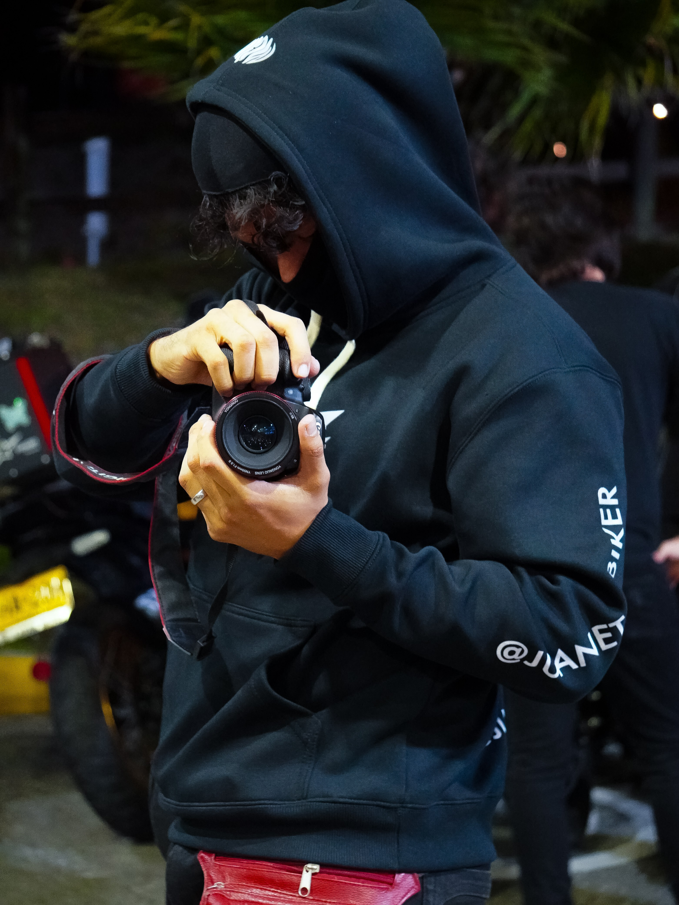

Fotografía Biker en Medellín
Explora la galería, elige tus fotos favoritas y envía tu pedido por WhatsApp.
Ver galería completaCómo funciona
Tres pasos para pedir tus fotos
1. Inicia sesión
Entra con tu cuenta de Google.
2. Elige tus fotos
Agrégalas al carrito desde la galería.
3. Envía el pedido
Te llega la lista a mi WhatsApp y coordinamos.
Últimas fotos
Una muestra de la galería

Sobre mí — Detrás de la cámara
Soy JuanetoFZ, fotógrafo biker en Medellín.
No persigo poses: persigo momentos. El ruido del motor, la curva tomada justo a tiempo, la cara de quien volvió vivo de la ruta. Mi trabajo es que esa adrenalina siga viva años después, en una foto que puedas colgar, imprimir o regalar.
Motos, cascos y calle: capturo a los motociclistas y sus máquinas tal como son. Después de cada sesión subo la galería para que veas todas las fotos y elijas tus favoritas; esas son las que edito y te entrego.
Cada sesión nace de la pasión por la moto y termina en tus manos: exploras la galería, eliges tus favoritas y coordinamos la entrega como entre amigos.
- Ciudad: Medellín, Colombia
- Instagram: @juaneto.biker
- Servicios: Fotos y videos
- Disponibilidad: Nocturna, de 8 p. m. a 12 de la noche